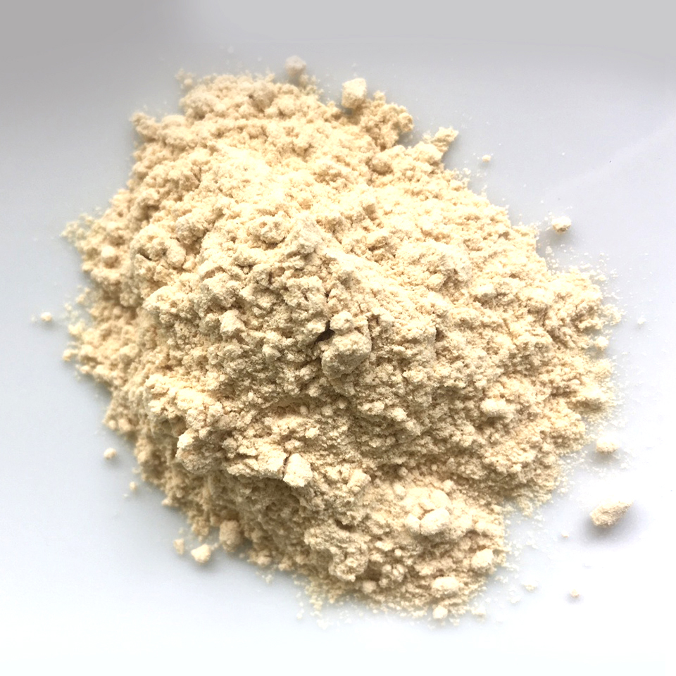
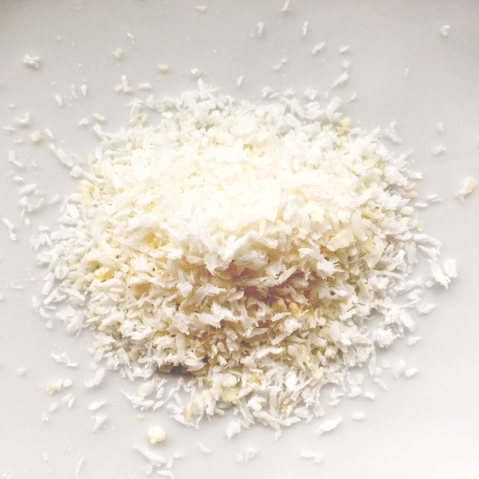
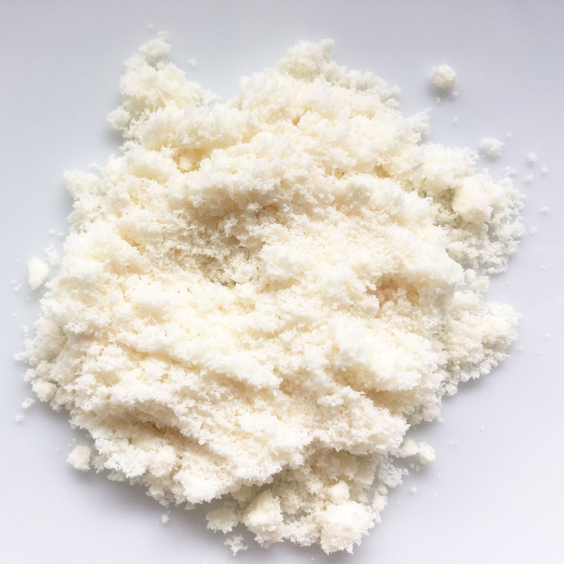
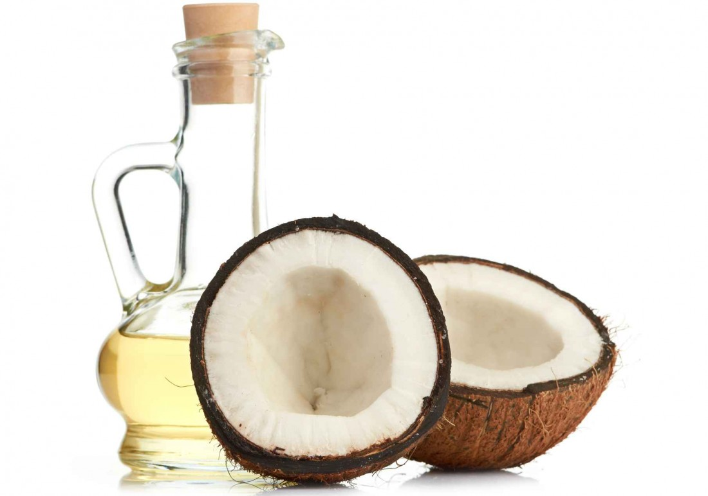
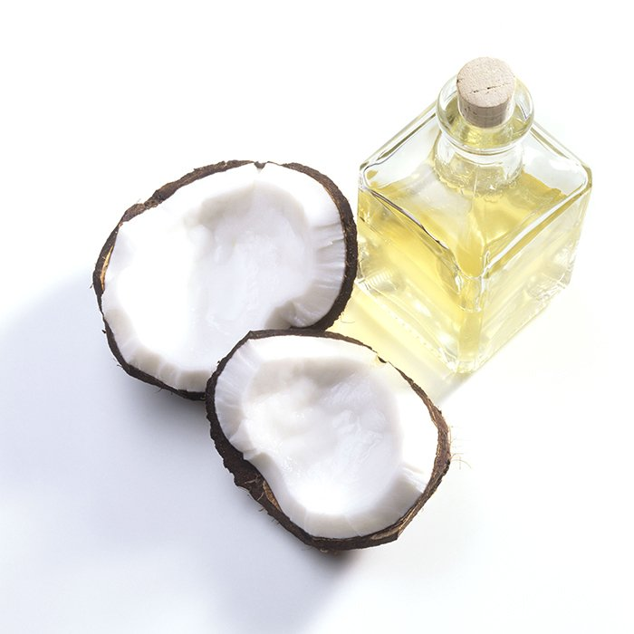

Our Products
We are passionate individuals, ensuring we produce and use only the highest quality ingredients, fully traceable and sourced ethically and transparently with our farmer partners. It is our mission to produce only best in class nutrition and foods.

Coconut Flour
Coconut Flour

Dessicated Coconut
Dessicated Coconut

Coconut Milk Powder
Coconut Milk Powder

Coconut Vinegar
Coconut Vinegar

Coconut Nectar

Coconut Oil
Coconut Oil
To get set up as a retail account, please say hello@cocorosugar.com and we will get back to you shortly.